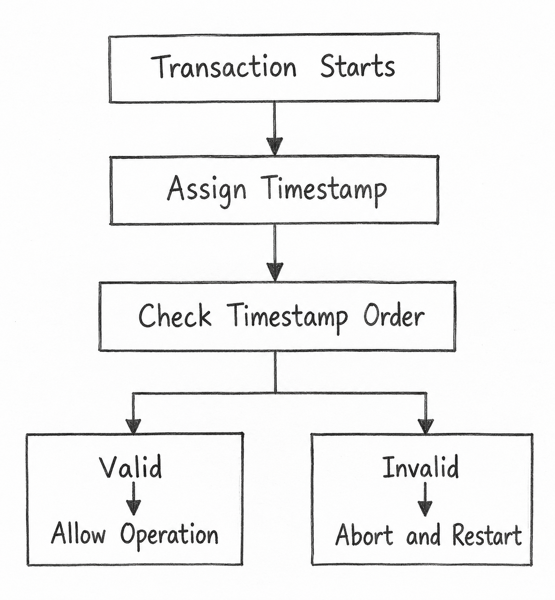

Q24. Extend the Concepts of Timestamping Methods Used for Concurrency Control in Database Transactions.
1. Timestamping Method
Timestamping is a method used in DBMS to control multiple transactions using timestamps instead of locks.
Each transaction receives a unique timestamp.
- Older Transaction: Smaller timestamp.
- Younger Transaction: Larger timestamp.
It helps maintain serializability.
2. Working of Timestamping
Each data item X maintains two timestamps:
- Read_TS(X): Timestamp of the latest successful read.
- Write_TS(X): Timestamp of the latest successful write.
Rules:
- Read: Allowed if the transaction's timestamp ≥ Write_TS(X).
- Write: Allowed if the transaction's timestamp ≥ both Read_TS(X) and Write_TS(X).
If a rule is broken, the transaction is aborted and restarted.
Diagram: Working of Timestamping

3. Types of Timestamping Methods
a) Basic Timestamp Ordering
Transactions follow timestamp order. If the order is broken, the transaction restarts.
b) Strict Timestamp Ordering
A transaction waits if another transaction has changed the required data but has not committed.
c) Thomas Write Rule
An outdated write may be ignored instead of restarting the transaction.
d) Multiversion Timestamp Ordering
Different versions of data are stored so transactions can read the correct version.
4. Example
- T1: Timestamp = 10 (Older)
- T2: Timestamp = 20 (Younger)
If T2 writes X first and T1 later tries to read X, T1 is aborted and restarted because it breaks timestamp order.
5. Advantages and Limitations
Advantages:
- Maintains serializability.
- Avoids deadlocks in basic timestamp ordering.
Limitations:
- Transactions may restart frequently.
- Repeated restarts may cause starvation.